Last updated: 2022-04-07
Checks: 7 0
Knit directory:
Fetal-Gene-Program-snRNAseq/
This reproducible R Markdown analysis was created with workflowr (version 1.7.0). The Checks tab describes the reproducibility checks that were applied when the results were created. The Past versions tab lists the development history.
Great! Since the R Markdown file has been committed to the Git repository, you know the exact version of the code that produced these results.
Great job! The global environment was empty. Objects defined in the global environment can affect the analysis in your R Markdown file in unknown ways. For reproduciblity it’s best to always run the code in an empty environment.
The command set.seed(20220406) was run prior to running
the code in the R Markdown file. Setting a seed ensures that any results
that rely on randomness, e.g. subsampling or permutations, are
reproducible.
Great job! Recording the operating system, R version, and package versions is critical for reproducibility.
Nice! There were no cached chunks for this analysis, so you can be confident that you successfully produced the results during this run.
Great job! Using relative paths to the files within your workflowr project makes it easier to run your code on other machines.
Great! You are using Git for version control. Tracking code development and connecting the code version to the results is critical for reproducibility.
The results in this page were generated with repository version 78db7d6. See the Past versions tab to see a history of the changes made to the R Markdown and HTML files.
Note that you need to be careful to ensure that all relevant files for
the analysis have been committed to Git prior to generating the results
(you can use wflow_publish or
wflow_git_commit). workflowr only checks the R Markdown
file, but you know if there are other scripts or data files that it
depends on. Below is the status of the Git repository when the results
were generated:
working directory clean
Note that any generated files, e.g. HTML, png, CSS, etc., are not included in this status report because it is ok for generated content to have uncommitted changes.
These are the previous versions of the repository in which changes were
made to the R Markdown (analysis/05-ClustCardioFND.Rmd) and
HTML (docs/05-ClustCardioFND.html) files. If you’ve
configured a remote Git repository (see ?wflow_git_remote),
click on the hyperlinks in the table below to view the files as they
were in that past version.
| File | Version | Author | Date | Message |
|---|---|---|---|---|
| Rmd | 78db7d6 | neda-mehdiabadi | 2022-04-07 | wflow_publish(c("analysis/Rmd", "data/txt", "data/README.md", |
library(edgeR)Loading required package: limmalibrary(RColorBrewer)
library(org.Hs.eg.db)Loading required package: AnnotationDbiLoading required package: stats4Loading required package: BiocGenerics
Attaching package: 'BiocGenerics'The following object is masked from 'package:limma':
plotMAThe following objects are masked from 'package:stats':
IQR, mad, sd, var, xtabsThe following objects are masked from 'package:base':
anyDuplicated, append, as.data.frame, basename, cbind, colnames,
dirname, do.call, duplicated, eval, evalq, Filter, Find, get, grep,
grepl, intersect, is.unsorted, lapply, Map, mapply, match, mget,
order, paste, pmax, pmax.int, pmin, pmin.int, Position, rank,
rbind, Reduce, rownames, sapply, setdiff, sort, table, tapply,
union, unique, unsplit, which.max, which.minLoading required package: BiobaseWelcome to Bioconductor
Vignettes contain introductory material; view with
'browseVignettes()'. To cite Bioconductor, see
'citation("Biobase")', and for packages 'citation("pkgname")'.Loading required package: IRangesLoading required package: S4Vectors
Attaching package: 'S4Vectors'The following objects are masked from 'package:base':
expand.grid, I, unnamelibrary(limma)
library(Seurat)Attaching SeuratObjectlibrary(cowplot)
library(DelayedArray)Loading required package: Matrix
Attaching package: 'Matrix'The following object is masked from 'package:S4Vectors':
expandLoading required package: MatrixGenericsLoading required package: matrixStats
Attaching package: 'matrixStats'The following objects are masked from 'package:Biobase':
anyMissing, rowMedians
Attaching package: 'MatrixGenerics'The following objects are masked from 'package:matrixStats':
colAlls, colAnyNAs, colAnys, colAvgsPerRowSet, colCollapse,
colCounts, colCummaxs, colCummins, colCumprods, colCumsums,
colDiffs, colIQRDiffs, colIQRs, colLogSumExps, colMadDiffs,
colMads, colMaxs, colMeans2, colMedians, colMins, colOrderStats,
colProds, colQuantiles, colRanges, colRanks, colSdDiffs, colSds,
colSums2, colTabulates, colVarDiffs, colVars, colWeightedMads,
colWeightedMeans, colWeightedMedians, colWeightedSds,
colWeightedVars, rowAlls, rowAnyNAs, rowAnys, rowAvgsPerColSet,
rowCollapse, rowCounts, rowCummaxs, rowCummins, rowCumprods,
rowCumsums, rowDiffs, rowIQRDiffs, rowIQRs, rowLogSumExps,
rowMadDiffs, rowMads, rowMaxs, rowMeans2, rowMedians, rowMins,
rowOrderStats, rowProds, rowQuantiles, rowRanges, rowRanks,
rowSdDiffs, rowSds, rowSums2, rowTabulates, rowVarDiffs, rowVars,
rowWeightedMads, rowWeightedMeans, rowWeightedMedians,
rowWeightedSds, rowWeightedVarsThe following object is masked from 'package:Biobase':
rowMedians
Attaching package: 'DelayedArray'The following objects are masked from 'package:base':
aperm, apply, rowsum, scale, sweeplibrary(scran)Loading required package: SingleCellExperimentLoading required package: SummarizedExperimentLoading required package: GenomicRangesLoading required package: GenomeInfoDb
Attaching package: 'SummarizedExperiment'The following object is masked from 'package:SeuratObject':
AssaysThe following object is masked from 'package:Seurat':
Assays
Attaching package: 'SingleCellExperiment'The following object is masked from 'package:edgeR':
cpmLoading required package: scuttlelibrary(NMF)Loading required package: pkgmakerLoading required package: registry
Attaching package: 'pkgmaker'The following object is masked from 'package:S4Vectors':
new2Loading required package: rngtoolsLoading required package: clusterNMF - BioConductor layer [OK] | Shared memory capabilities [NO: synchronicity] | Cores 31/32 To enable shared memory capabilities, try: install.extras('
NMF
')
Attaching package: 'NMF'The following object is masked from 'package:DelayedArray':
seedThe following object is masked from 'package:S4Vectors':
nrunlibrary(workflowr)
library(ggplot2)
library(clustree)Loading required package: ggraphlibrary(dplyr)
Attaching package: 'dplyr'The following objects are masked from 'package:GenomicRanges':
intersect, setdiff, unionThe following object is masked from 'package:GenomeInfoDb':
intersectThe following object is masked from 'package:matrixStats':
countThe following object is masked from 'package:AnnotationDbi':
selectThe following objects are masked from 'package:IRanges':
collapse, desc, intersect, setdiff, slice, unionThe following objects are masked from 'package:S4Vectors':
first, intersect, rename, setdiff, setequal, unionThe following object is masked from 'package:Biobase':
combineThe following objects are masked from 'package:BiocGenerics':
combine, intersect, setdiff, unionThe following objects are masked from 'package:stats':
filter, lagThe following objects are masked from 'package:base':
intersect, setdiff, setequal, unionsource("code/normCounts.R")
source("code/findModes.R")
source("code/ggplotColors.R")targets <- read.delim("data/targets.txt",header=TRUE, stringsAsFactors = FALSE)
targets$FileName2 <- paste(targets$FileName,"/",sep="")
targets$Group_ID2 <- gsub("LV_","",targets$Group_ID)
group <- c("fetal_1","fetal_2","fetal_3",
"non-diseased_1","non-diseased_2","non-diseased_3",
"diseased_1","diseased_2",
"diseased_3","diseased_4")
m <- match(group, targets$Group_ID2)
targets <- targets[m,]fetal.integrated <- readRDS(file="/group/card2/Neda/MCRI_LAB/single_cell_nuclei_rnaseq/Porello-heart-snRNAseq/output/RDataObjects/fetal-int.Rds")
load(file="/group/card2/Neda/MCRI_LAB/single_cell_nuclei_rnaseq/Porello-heart-snRNAseq/output/RDataObjects/fetalObjs.Rdata")
##note: nd.integrated is also an integrated form of young heart samples. young.integrated has already been published in Sim et al., 2021
nd.integrated <- readRDS(file="/group/card2/Neda/MCRI_LAB/single_cell_nuclei_rnaseq/Porello-heart-snRNAseq/output/RDataObjects/nd-int.Rds")
load(file="/group/card2/Neda/MCRI_LAB/single_cell_nuclei_rnaseq/Porello-heart-snRNAseq/output/RDataObjects/ndObjs.Rdata")
dcm.integrated <- readRDS(file="/group/card2/Neda/MCRI_LAB/single_cell_nuclei_rnaseq/Porello-heart-snRNAseq/output/RDataObjects/dcm-int.Rds")
load(file="/group/card2/Neda/MCRI_LAB/single_cell_nuclei_rnaseq/Porello-heart-snRNAseq/output/RDataObjects/dcmObjs.Rdata")# Default 0.3
Idents(fetal.integrated) <- fetal.integrated$integrated_snn_res.0.3
DimPlot(fetal.integrated, reduction = "tsne",label=TRUE,label.size = 6)+NoLegend()
# Default 0.3
Idents(nd.integrated) <- nd.integrated$integrated_snn_res.0.3
DimPlot(nd.integrated, reduction = "tsne",label=TRUE,label.size = 6)+NoLegend()
# Default 0.3
Idents(dcm.integrated) <- dcm.integrated$integrated_snn_res.0.3
DimPlot(dcm.integrated, reduction = "tsne",label=TRUE,label.size = 6)+NoLegend()# This data has already been generated and saved as the heart object.
#heart <- merge(fetal.integrated, y = c(nd.integrated, dcm.integrated), project = "heart")
heart <- readRDS("/group/card2/Neda/MCRI_LAB/must-do-projects/EnzoPorrelloLab/dilated-cardiomyopathy/data/heart-int-FND-filtered.Rds")
table(heart$orig.ident)
Fetal ND DCM
27760 16964 32712 Idents(heart) <- heart$Broad_celltype
cardio <- subset(heart,subset = Broad_celltype == "CM")Cardiomyocytes are fairly large cells and we wouldn’t expect them to only be expressing very few genes.
DefaultAssay(cardio) <- "RNA"
par(mar=c(4,4,2,1))
plot(density(cardio$nFeature_RNA),main="Number of genes detected")
abline(v=500,col=4, lty=3)
legend("topright",lty=2,col=4,legend="#genes = 500")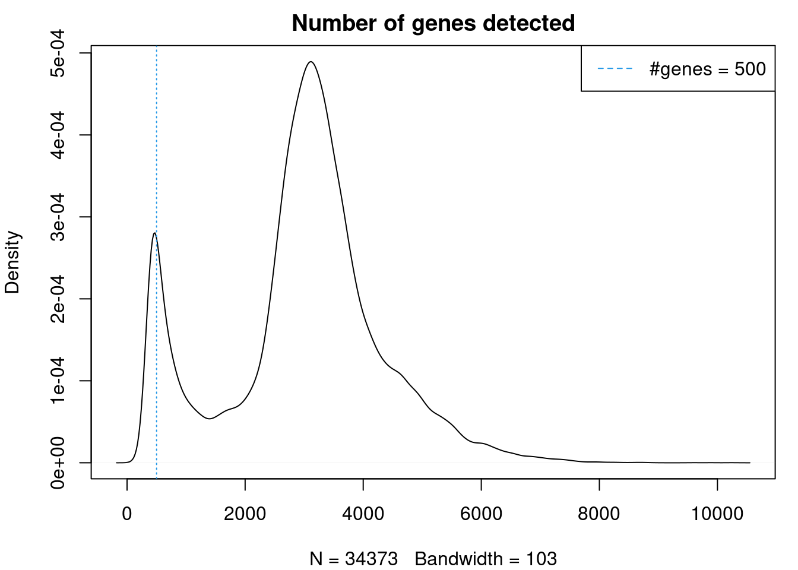
plot(density(cardio$nCount_RNA),main="Library size")
abline(v=2500,col=4, lty=3)
legend("topright",lty=2,col=4,legend="library size = 2500")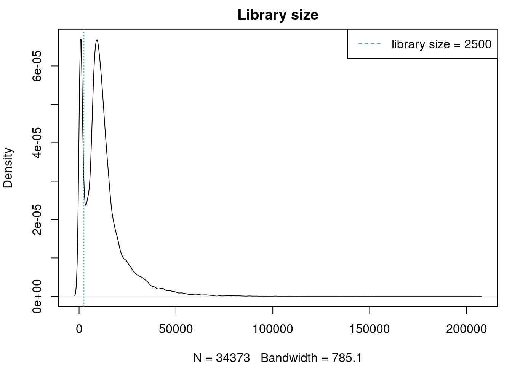
cardio <- subset(cardio, subset = nFeature_RNA > 500 & nCount_RNA > 2500)
# For the sake of time, I ran the following code once and saved the object as cardio-int-FND.Rds
cardio.list <- SplitObject(cardio, split.by = "biorep")
min <- min(sapply(cardio.list, ncol))
for (i in 1:length(cardio.list)) {
cardio.list[[i]] <- SCTransform(cardio.list[[i]], verbose = FALSE)
}
cardio.anchors <- FindIntegrationAnchors(object.list = cardio.list, dims=1:30,anchor.features = 3000,k.filter=min)
cardio.integrated <- IntegrateData(anchorset = cardio.anchors,dims=1:30)
DefaultAssay(object = cardio.integrated) <- "integrated"
cardio.integrated <- ScaleData(cardio.integrated, verbose = FALSE)
cardio.integrated <- RunPCA(cardio.integrated, npcs = 50, verbose = FALSE)
ElbowPlot(cardio.integrated,ndims=50)
cardio.integrated <- FindNeighbors(cardio.integrated, dims = 1:20)
cardio.integrated <- FindClusters(cardio.integrated, resolution = 0.1)
table(Idents(cardio.integrated))
saveRDS(cardio.integrated, file = "/group/card2/Neda/MCRI_LAB/must-do-projects/EnzoPorrelloLab/dilated-cardiomyopathy/data/cardio-int-FND.Rds")cardio.integrated <- readRDS("/group/card2/Neda/MCRI_LAB/must-do-projects/EnzoPorrelloLab/dilated-cardiomyopathy/data/cardio-int-FND.Rds")
cardio.integrated$orig.ident <- factor(cardio.integrated$orig.ident,levels = c("Fetal","ND","DCM"))
cardio.integrated$biorep <- factor(cardio.integrated$biorep,levels = c("f1","f2","f3","nd1","nd2","nd3","d1","d2","d3","d4"))
table(cardio.integrated$orig.ident)
Fetal ND DCM
16220 5516 6982 table(cardio.integrated$biorep)
f1 f2 f3 nd1 nd2 nd3 d1 d2 d3 d4
4620 7056 4544 1049 1962 2505 1267 912 3798 1005 VizDimLoadings(cardio.integrated, dims = 1:4, reduction = "pca")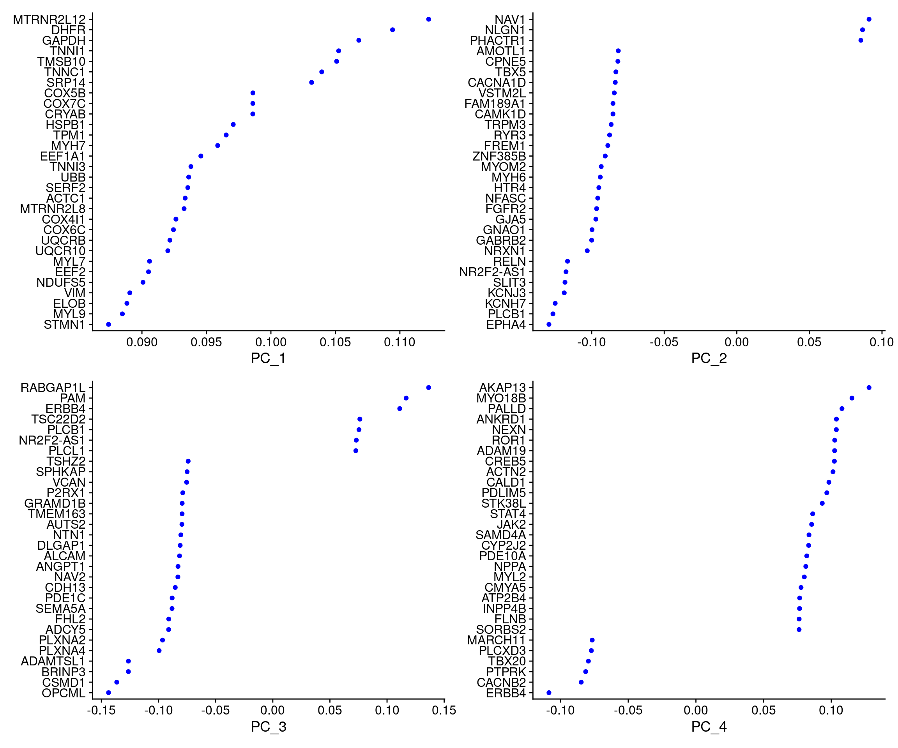
DimPlot(cardio.integrated, reduction = "pca",group.by="orig.ident")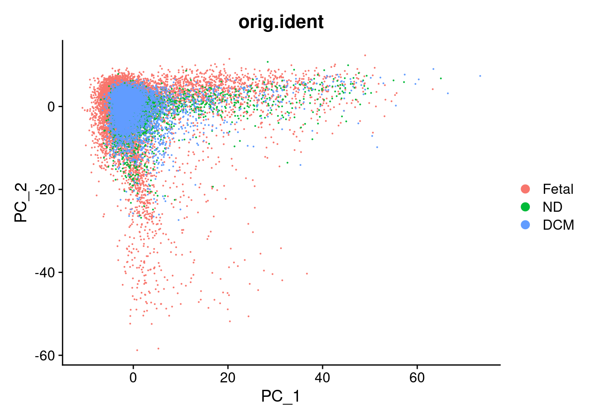
DimPlot(cardio.integrated, reduction = "pca",group.by="biorep")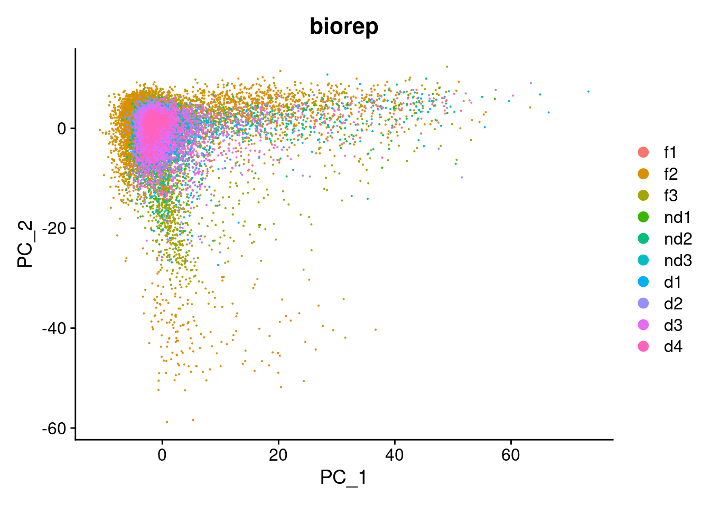
DimPlot(cardio.integrated, reduction = "pca",group.by="sex")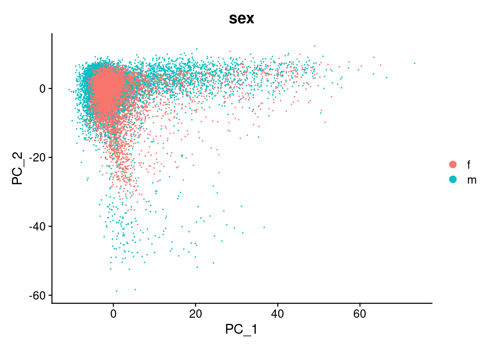
DimPlot(cardio.integrated, reduction = "pca",group.by="batch")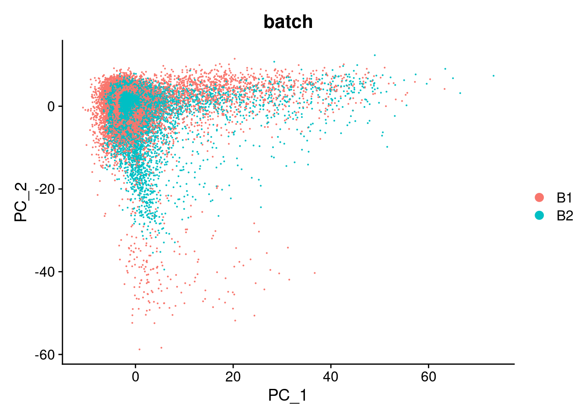
DimHeatmap(cardio.integrated, dims = 1:15, cells = 500, balanced = TRUE)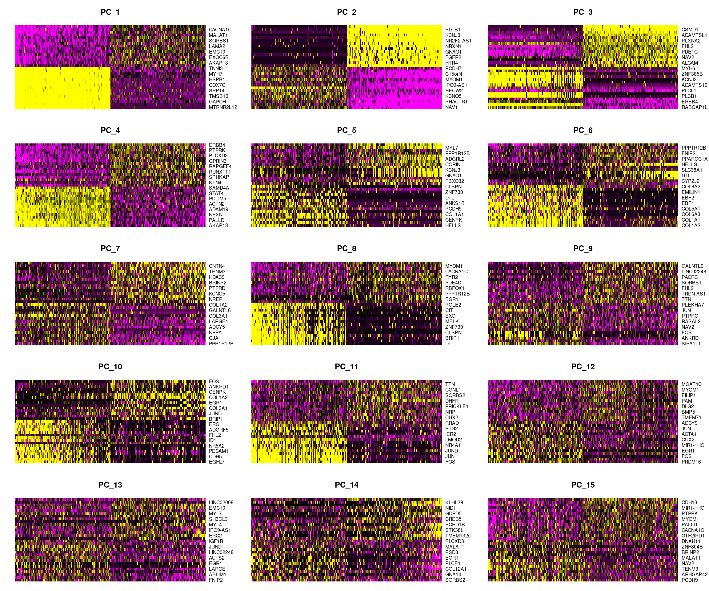
DimHeatmap(cardio.integrated, dims = 16:30, cells = 500, balanced = TRUE)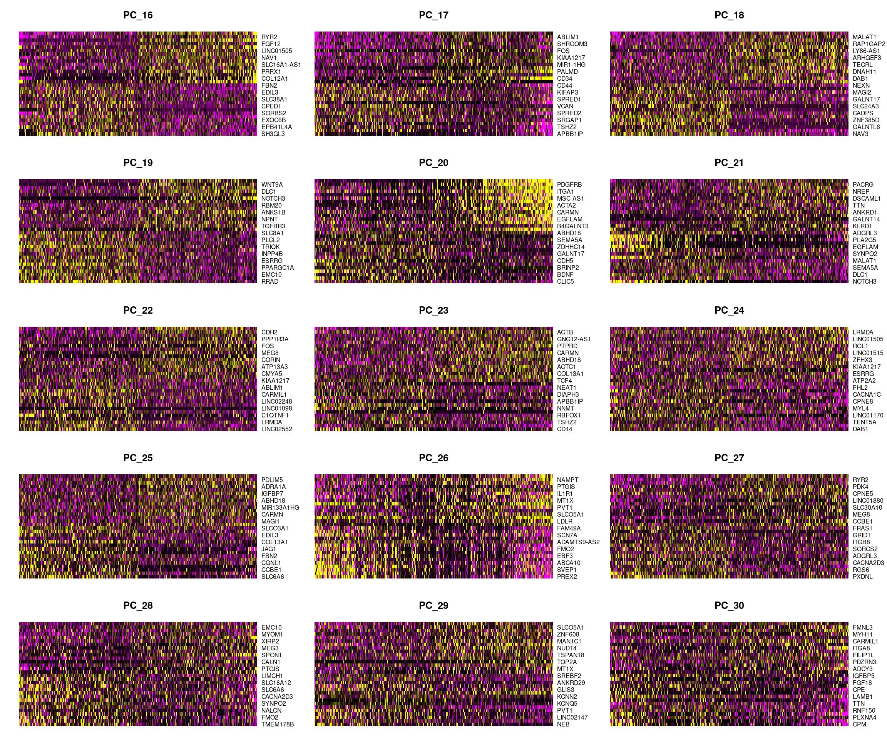
DimHeatmap(cardio.integrated, dims = 31:45, cells = 500, balanced = TRUE)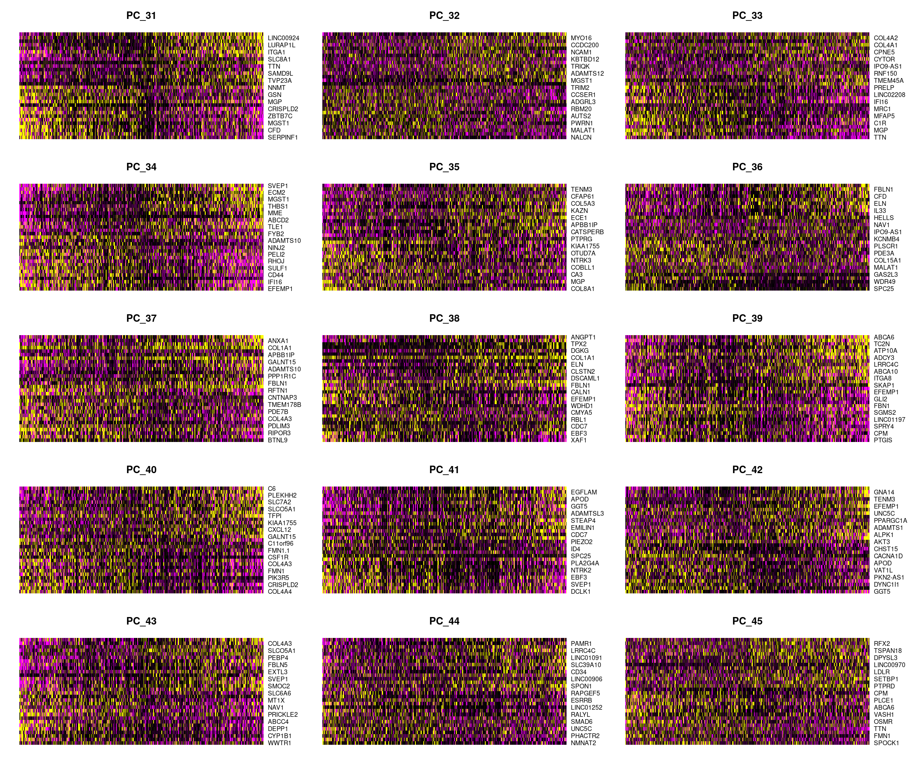
par(mar=c(5,4,2,2))
barplot(table(Idents(cardio.integrated)),ylab="Number of cells",xlab="Clusters")
title("Number of cells in each cluster")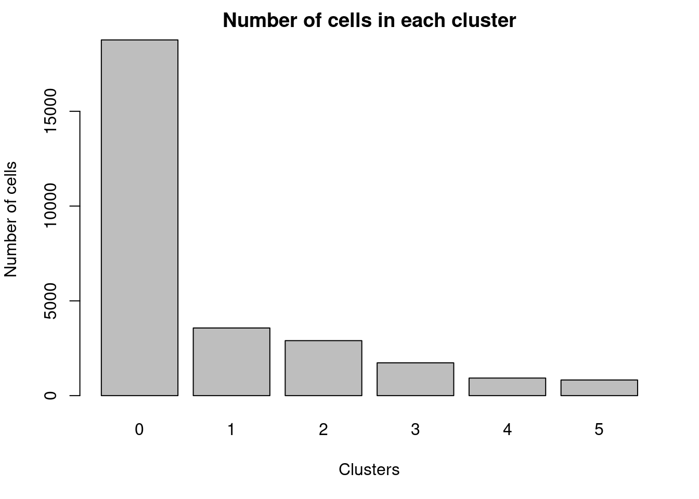
set.seed(10)
cardio.integrated <- RunUMAP(cardio.integrated, reduction = "pca", dims = 1:20)Warning: The default method for RunUMAP has changed from calling Python UMAP via reticulate to the R-native UWOT using the cosine metric
To use Python UMAP via reticulate, set umap.method to 'umap-learn' and metric to 'correlation'
This message will be shown once per session11:10:33 UMAP embedding parameters a = 0.9922 b = 1.11211:10:33 Read 28718 rows and found 20 numeric columns11:10:33 Using Annoy for neighbor search, n_neighbors = 3011:10:33 Building Annoy index with metric = cosine, n_trees = 500% 10 20 30 40 50 60 70 80 90 100%[----|----|----|----|----|----|----|----|----|----|**************************************************|
11:10:38 Writing NN index file to temp file /tmp/RtmpRaRHlD/file711060039953
11:10:38 Searching Annoy index using 1 thread, search_k = 3000
11:10:48 Annoy recall = 100%
11:10:49 Commencing smooth kNN distance calibration using 1 thread
11:10:52 Initializing from normalized Laplacian + noise
11:10:53 Commencing optimization for 200 epochs, with 1289270 positive edges
11:11:31 Optimization finishedDimPlot(cardio.integrated, reduction = "umap",label=TRUE,label.size = 6,pt.size = 0.5, split.by = "orig.ident")+NoLegend()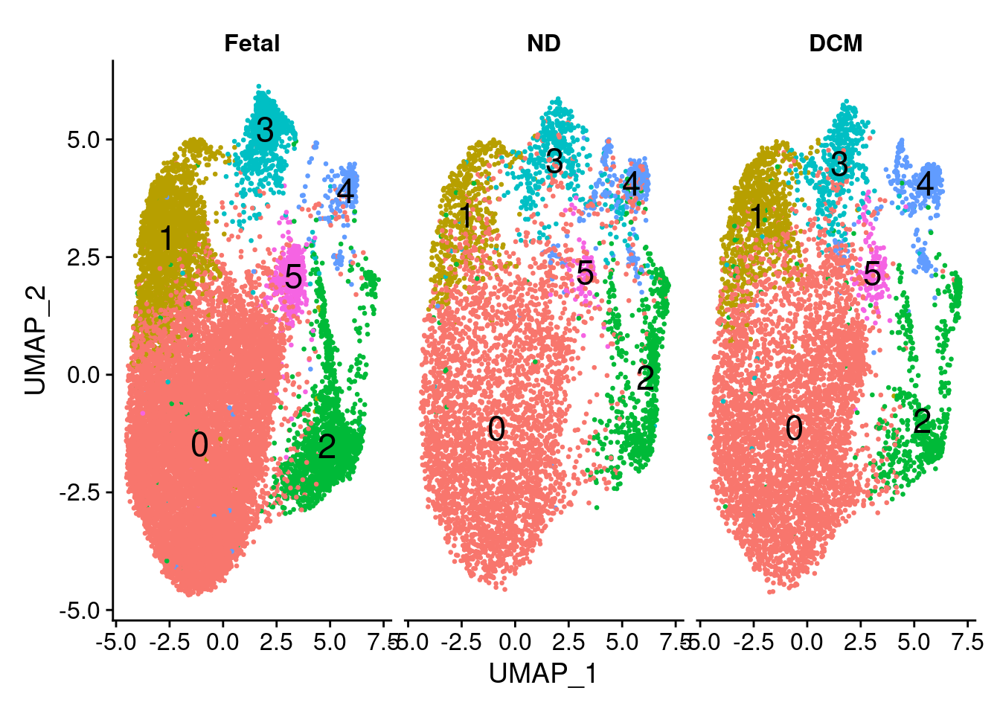
DimPlot(cardio.integrated, reduction = "umap", group.by = "biorep")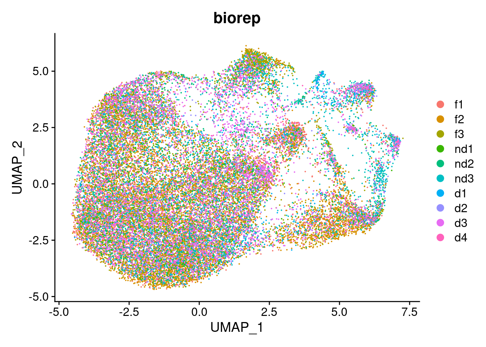
DimPlot(cardio.integrated, reduction = "umap", group.by = "sex")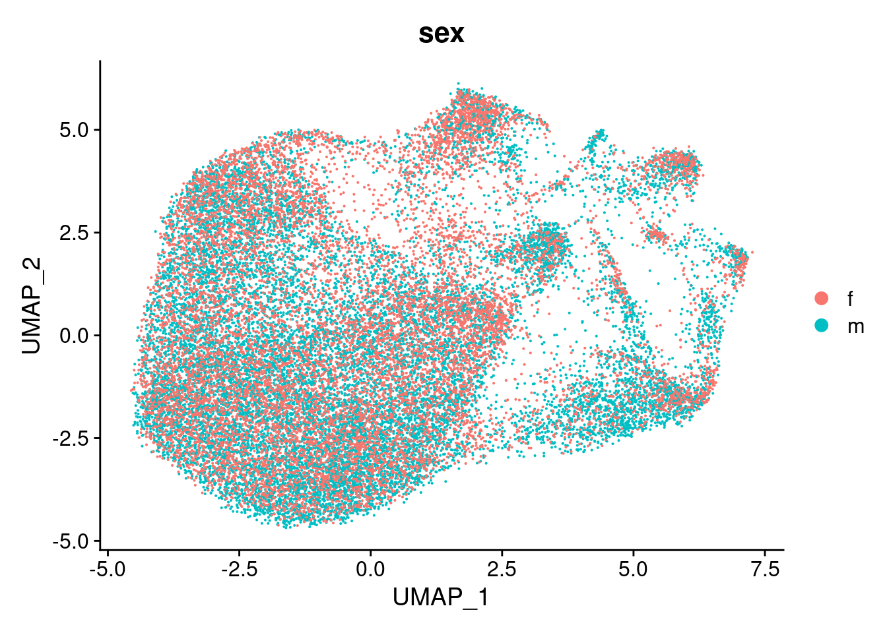
DimPlot(cardio.integrated, reduction = "umap", group.by = "batch")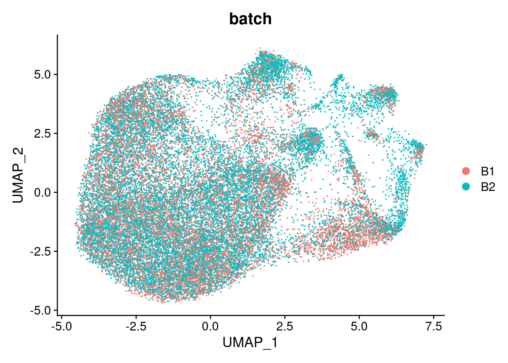
par(mfrow=c(1,1))
par(mar=c(4,4,2,2))
tab <- table(Idents(cardio.integrated),cardio.integrated$biorep)
barplot(t(tab/rowSums(tab)),beside=TRUE,col=ggplotColors(10),legend=TRUE)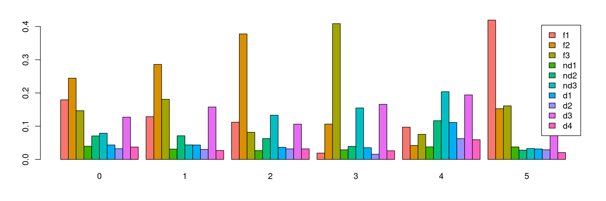
par(mfrow=c(1,1))
par(mar=c(4,4,2,2))
tab <- table(Idents(cardio.integrated),cardio.integrated$orig.ident)
barplot(t(tab/rowSums(tab)),beside=TRUE,col=ggplotColors(3))
legend("topleft",legend=colnames(tab),fill=ggplotColors(3))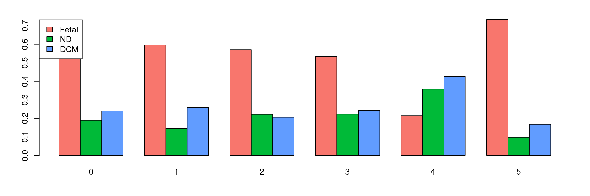
DefaultAssay(cardio.integrated) <- "RNA"
Idents(cardio.integrated) <- cardio.integrated$integrated_snn_res.0.1
# Load unfiltered counts matrix for every sample (object all)
load("/group/card2/Neda/MCRI_LAB/single_cell_nuclei_rnaseq/Porello-heart-snRNAseq/output/RDataObjects/all-counts.Rdata")columns(org.Hs.eg.db) [1] "ACCNUM" "ALIAS" "ENSEMBL" "ENSEMBLPROT" "ENSEMBLTRANS"
[6] "ENTREZID" "ENZYME" "EVIDENCE" "EVIDENCEALL" "GENENAME"
[11] "GENETYPE" "GO" "GOALL" "IPI" "MAP"
[16] "OMIM" "ONTOLOGY" "ONTOLOGYALL" "PATH" "PFAM"
[21] "PMID" "PROSITE" "REFSEQ" "SYMBOL" "UCSCKG"
[26] "UNIPROT" ann <- AnnotationDbi:::select(org.Hs.eg.db,keys=rownames(all),columns=c("SYMBOL","ENTREZID","ENSEMBL","GENENAME","CHR"),keytype = "SYMBOL")Warning in .deprecatedColsMessage(): Accessing gene location information via 'CHR','CHRLOC','CHRLOCEND' is
deprecated. Please use a range based accessor like genes(), or select()
with columns values like TXCHROM and TXSTART on a TxDb or OrganismDb
object instead.'select()' returned 1:many mapping between keys and columnsm <- match(rownames(all),ann$SYMBOL)
ann <- ann[m,]
table(ann$SYMBOL==rownames(all))
TRUE
33939 mito <- grep("mitochondrial",ann$GENENAME)
length(mito)[1] 224ribo <- grep("ribosomal",ann$GENENAME)
length(ribo)[1] 197missingEZID <- which(is.na(ann$ENTREZID))
length(missingEZID)[1] 10976# Limma-trend for DE
m <- match(colnames(cardio.integrated),colnames(all))
all.counts <- all[,m]chuck <- unique(c(mito,ribo,missingEZID))
length(chuck)[1] 11318all.counts.keep <- all.counts[-chuck,]
ann.keep <- ann[-chuck,]
table(ann.keep$SYMBOL==rownames(all.counts.keep))
TRUE
22621 numzero.genes <- rowSums(all.counts.keep==0)
table(numzero.genes > (ncol(all.counts.keep)-20))
FALSE TRUE
18038 4583 keep.genes <- numzero.genes < (ncol(all.counts.keep)-20)
table(keep.genes)keep.genes
FALSE TRUE
4636 17985 all.keep <- all.counts.keep[keep.genes,]
dim(all.keep)[1] 17985 28718ann.keep <- ann.keep[keep.genes,]y.cardio <- DGEList(all.keep)
logcounts <- normCounts(y.cardio,log=TRUE,prior.count=0.5)
maxclust <- length(levels(Idents(cardio.integrated)))-1
grp <- paste("c",Idents(cardio.integrated),sep = "")
grp <- factor(grp,levels = paste("c",0:maxclust,sep=""))
design <- model.matrix(~0+grp+cardio.integrated$biorep)
colnames(design)[1:(maxclust+1)] <- levels(grp)
mycont <- matrix(0,ncol=length(levels(grp)),nrow=length(levels(grp)))
colnames(mycont)<-levels(grp)
diag(mycont)<-1
mycont[upper.tri(mycont)]<- -1/(length(levels(factor(grp)))-1)
mycont[lower.tri(mycont)]<- -1/(length(levels(factor(grp)))-1)
# Fill out remaining rows with 0s
zero.rows <- matrix(0,ncol=length(levels(grp)),nrow=(ncol(design)-length(levels(Idents(cardio.integrated)))))
test <- rbind(mycont,zero.rows)
fit <- lmFit(logcounts,design)
fit.cont <- contrasts.fit(fit,contrasts=test)
fit.cont <- eBayes(fit.cont,trend=TRUE,robust=TRUE)
fit.cont$genes <- ann.keep
summary(decideTests(fit.cont)) c0 c1 c2 c3 c4 c5
Down 6573 4641 3978 2255 1542 4588
NotSig 9658 10665 9798 12863 11479 12381
Up 1754 2679 4209 2867 4964 1016treat <- treat(fit.cont,lfc=0.5)
dt <- decideTests(treat)
summary(dt) c0 c1 c2 c3 c4 c5
Down 19 36 3 83 93 16
NotSig 17956 17862 17834 17767 17750 17906
Up 10 87 148 135 142 63par(mfrow=c(3,3))
for(i in 1:ncol(mycont)){
plotMD(treat,coef=i,status = dt[,i],hl.cex=0.5)
abline(h=0,col=colours()[c(226)])
lines(lowess(treat$Amean,treat$coefficients[,i]),lwd=1.5,col=4)
}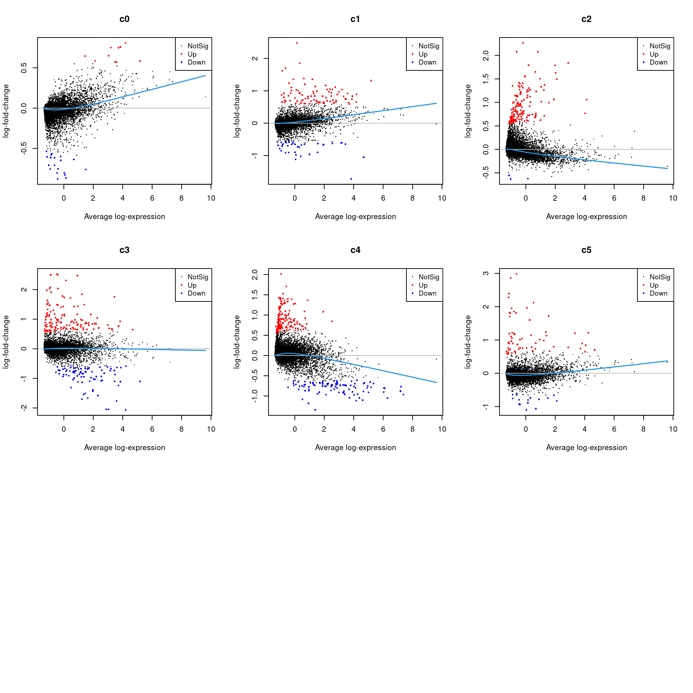
contnames <- colnames(mycont)
for(i in 1:length(contnames)){
topsig <- topTreat(treat,coef=i,n=Inf)
write.csv(topsig,file=paste("./output/CM-Cluster-",contnames[i],".csv",sep=""))
}fdr <- apply(treat$p.value, 2, function(x) p.adjust(x, method="BH"))
output <- data.frame(treat$genes,LogFC=treat$coefficients,AveExp=treat$Amean,tstat=treat$t, pvalue=treat$p.value, fdr=fdr)
write.csv(output,file="./output/CM-MarkerAnalysis.csv")contnames <- colnames(mycont)
load("/group/card2/Neda/MCRI_LAB/single_cell_nuclei_rnaseq/Porello-heart-snRNAseq/output/RDataObjects/human_c2_v5p2.rdata")
load("/group/card2/Neda/MCRI_LAB/single_cell_nuclei_rnaseq/Porello-heart-snRNAseq/output/RDataObjects/human_c5_v5p2.rdata")
c2.id <- ids2indices(Hs.c2,treat$genes$ENTREZID)
c5.id <- ids2indices(Hs.c5,treat$genes$ENTREZID)
reactome.id <-c2.id[grep("REACTOME",names(c2.id))]
c2.c0 <- cameraPR(treat$t[,1],c2.id)
reactome.c0 <- cameraPR(treat$t[,1],reactome.id)
go.c0 <- cameraPR(treat$t[,1],c5.id)
for(i in 1:length(contnames)){
write.csv(cameraPR(treat$t[,i],c2.id),file=paste("./output/CM-GeneSetTests-c2-",contnames[i],".csv",sep=""))
write.csv(cameraPR(treat$t[,i],reactome.id),file=paste("./output/CM-GeneSetTests-reactome-",contnames[i],".csv",sep=""))
write.csv(cameraPR(treat$t[,i],c5.id),file=paste("./CM-GeneSetTests-go-",contnames[i],".csv",sep=""))
}The quality of the clusters look good.
par(mfrow=c(1,1))
numgenes <- colSums(all.keep!=0)
boxplot(numgenes~grp)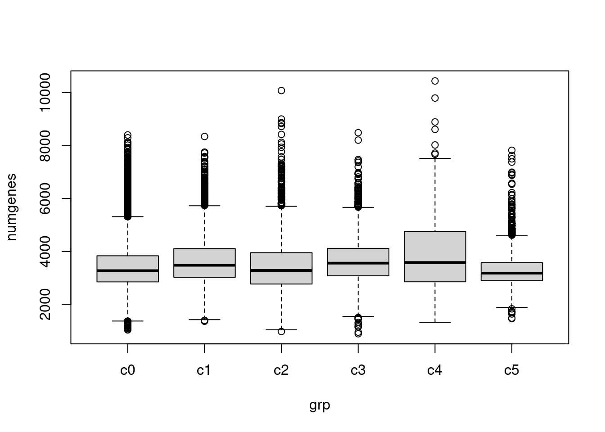
sam <- factor(cardio.integrated$biorep,levels=c("f1","f2","f3","nd1","nd2","nd3","d1","d2","d3","d4"))
newgrp <- paste(grp,sam,sep=".")
newgrp <- factor(newgrp,levels=paste(rep(levels(grp),each=10),levels(sam),sep="."))
o <-order(newgrp)
clust <- rep(levels(grp),each=10)
samps <- rep(levels(sam),length(levels(grp)))sumexpr <- matrix(NA,nrow=nrow(logcounts),ncol=length(levels(newgrp)))
rownames(sumexpr) <- rownames(logcounts)
colnames(sumexpr) <- levels(newgrp)
for(i in 1:nrow(sumexpr)){
sumexpr[i,] <- tapply(logcounts[i,],newgrp,mean)
}sig.genes <- gene.label <- vector("list", length(levels(grp)))
for(i in 1:length(sig.genes)){
top <- topTreat(treat,coef=i,n=Inf)
sig.genes[[i]] <- rownames(top)[top$logFC>0][1:10]
gene.label[[i]] <- paste(rownames(top)[top$logFC>0][1:10],levels(grp)[i],sep="-")
}
csig <- unlist(sig.genes)
genes <- unlist(gene.label)
myColors <- list(Clust=NA,Sample=NA)
myColors$Clust<-sample(ggplotColors(length(levels(grp))),length(levels(grp)))
names(myColors$Clust)<-levels(grp)
myColors$Sample <- sample(ggplotColors(length(levels(sam))),length(levels(sam)))
names(myColors$Sample) <- levels(sam)
#pdf(file="./output/Figures/cardio-heatmap-siggenes-summarised-FND-filtered.pdf",width=20,height=20,onefile = FALSE)
aheatmap(sumexpr[csig,],Rowv = NA,Colv = NA, labRow = genes,
annCol=list(Clust=clust,Sample=samps),
annColors=myColors,
fontsize=10,color="-RdYlBu",
scale="none")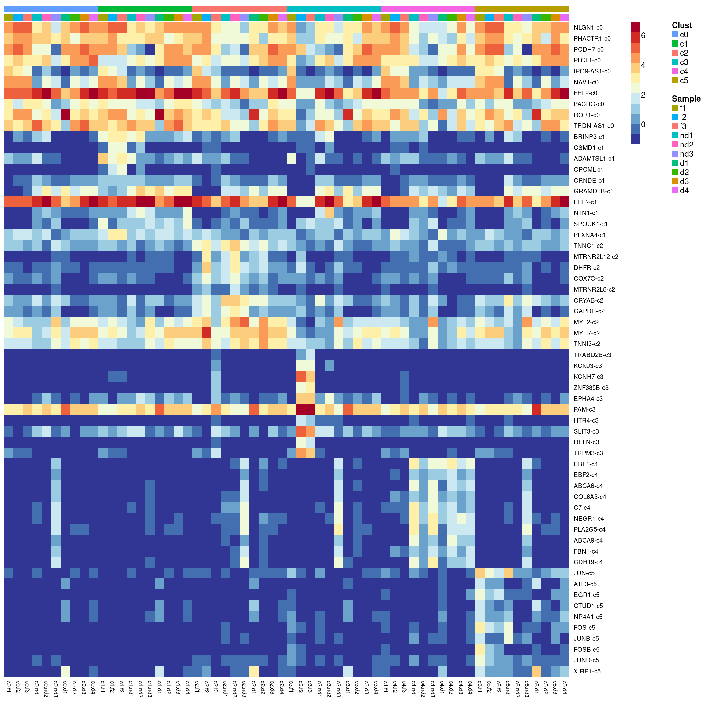
#dev.off()
sessionInfo()R version 4.1.2 (2021-11-01)
Platform: x86_64-pc-linux-gnu (64-bit)
Running under: CentOS Linux 7 (Core)
Matrix products: default
BLAS: /hpc/software/installed/R/4.1.2/lib64/R/lib/libRblas.so
LAPACK: /hpc/software/installed/R/4.1.2/lib64/R/lib/libRlapack.so
locale:
[1] LC_CTYPE=en_US.UTF-8 LC_NUMERIC=C
[3] LC_TIME=en_US.UTF-8 LC_COLLATE=en_US.UTF-8
[5] LC_MONETARY=en_US.UTF-8 LC_MESSAGES=en_US.UTF-8
[7] LC_PAPER=en_US.UTF-8 LC_NAME=C
[9] LC_ADDRESS=C LC_TELEPHONE=C
[11] LC_MEASUREMENT=en_US.UTF-8 LC_IDENTIFICATION=C
attached base packages:
[1] stats4 stats graphics grDevices utils datasets methods
[8] base
other attached packages:
[1] dplyr_1.0.8 clustree_0.4.4
[3] ggraph_2.0.5 ggplot2_3.3.5
[5] NMF_0.23.0 bigmemory_4.5.36
[7] cluster_2.1.2 rngtools_1.5.2
[9] pkgmaker_0.32.2 registry_0.5-1
[11] scran_1.22.1 scuttle_1.4.0
[13] SingleCellExperiment_1.16.0 SummarizedExperiment_1.24.0
[15] GenomicRanges_1.46.1 GenomeInfoDb_1.30.1
[17] DelayedArray_0.20.0 MatrixGenerics_1.6.0
[19] matrixStats_0.61.0 Matrix_1.4-0
[21] cowplot_1.1.1 SeuratObject_4.0.4
[23] Seurat_4.1.0 org.Hs.eg.db_3.14.0
[25] AnnotationDbi_1.56.2 IRanges_2.28.0
[27] S4Vectors_0.32.3 Biobase_2.54.0
[29] BiocGenerics_0.40.0 RColorBrewer_1.1-2
[31] edgeR_3.36.0 limma_3.50.1
[33] workflowr_1.7.0
loaded via a namespace (and not attached):
[1] utf8_1.2.2 reticulate_1.24
[3] tidyselect_1.1.2 RSQLite_2.2.10
[5] htmlwidgets_1.5.4 grid_4.1.2
[7] BiocParallel_1.28.3 Rtsne_0.15
[9] munsell_0.5.0 ScaledMatrix_1.2.0
[11] codetools_0.2-18 ica_1.0-2
[13] statmod_1.4.36 future_1.24.0
[15] miniUI_0.1.1.1 withr_2.4.3
[17] spatstat.random_2.1-0 colorspace_2.0-3
[19] highr_0.9 knitr_1.37
[21] rstudioapi_0.13 ROCR_1.0-11
[23] tensor_1.5 listenv_0.8.0
[25] labeling_0.4.2 git2r_0.29.0
[27] GenomeInfoDbData_1.2.7 polyclip_1.10-0
[29] farver_2.1.0 bit64_4.0.5
[31] rprojroot_2.0.2 parallelly_1.30.0
[33] vctrs_0.3.8 generics_0.1.2
[35] xfun_0.29 doParallel_1.0.17
[37] R6_2.5.1 graphlayouts_0.8.0
[39] rsvd_1.0.5 locfit_1.5-9.4
[41] bitops_1.0-7 spatstat.utils_2.3-0
[43] cachem_1.0.6 assertthat_0.2.1
[45] promises_1.2.0.1 scales_1.1.1
[47] gtable_0.3.0 beachmat_2.10.0
[49] globals_0.14.0 processx_3.5.2
[51] goftest_1.2-3 tidygraph_1.2.0
[53] rlang_1.0.1 splines_4.1.2
[55] lazyeval_0.2.2 spatstat.geom_2.3-2
[57] yaml_2.3.5 reshape2_1.4.4
[59] abind_1.4-5 httpuv_1.6.5
[61] tools_4.1.2 gridBase_0.4-7
[63] ellipsis_0.3.2 spatstat.core_2.4-0
[65] jquerylib_0.1.4 ggridges_0.5.3
[67] Rcpp_1.0.8 plyr_1.8.6
[69] sparseMatrixStats_1.6.0 zlibbioc_1.40.0
[71] purrr_0.3.4 RCurl_1.98-1.6
[73] ps_1.6.0 rpart_4.1.16
[75] deldir_1.0-6 viridis_0.6.2
[77] pbapply_1.5-0 zoo_1.8-9
[79] ggrepel_0.9.1 fs_1.5.2
[81] magrittr_2.0.2 RSpectra_0.16-0
[83] data.table_1.14.2 scattermore_0.8
[85] lmtest_0.9-39 RANN_2.6.1
[87] whisker_0.4 fitdistrplus_1.1-6
[89] patchwork_1.1.1 mime_0.12
[91] evaluate_0.15 xtable_1.8-4
[93] gridExtra_2.3 compiler_4.1.2
[95] tibble_3.1.6 KernSmooth_2.23-20
[97] crayon_1.5.0 htmltools_0.5.2
[99] mgcv_1.8-39 later_1.3.0
[101] tidyr_1.2.0 DBI_1.1.2
[103] tweenr_1.0.2 MASS_7.3-55
[105] cli_3.2.0 parallel_4.1.2
[107] metapod_1.2.0 igraph_1.2.11
[109] bigmemory.sri_0.1.3 pkgconfig_2.0.3
[111] getPass_0.2-2 plotly_4.10.0
[113] spatstat.sparse_2.1-0 foreach_1.5.2
[115] bslib_0.3.1 dqrng_0.3.0
[117] XVector_0.34.0 stringr_1.4.0
[119] callr_3.7.0 digest_0.6.29
[121] sctransform_0.3.3 RcppAnnoy_0.0.19
[123] spatstat.data_2.1-2 Biostrings_2.62.0
[125] rmarkdown_2.12.1 leiden_0.3.9
[127] uwot_0.1.11 DelayedMatrixStats_1.16.0
[129] shiny_1.7.1 lifecycle_1.0.1
[131] nlme_3.1-155 jsonlite_1.8.0
[133] BiocNeighbors_1.12.0 viridisLite_0.4.0
[135] fansi_1.0.2 pillar_1.7.0
[137] lattice_0.20-45 KEGGREST_1.34.0
[139] fastmap_1.1.0 httr_1.4.2
[141] survival_3.3-0 glue_1.6.2
[143] iterators_1.0.14 png_0.1-7
[145] bluster_1.4.0 bit_4.0.4
[147] ggforce_0.3.3 stringi_1.7.6
[149] sass_0.4.0 blob_1.2.2
[151] BiocSingular_1.10.0 memoise_2.0.1
[153] irlba_2.3.5 future.apply_1.8.1